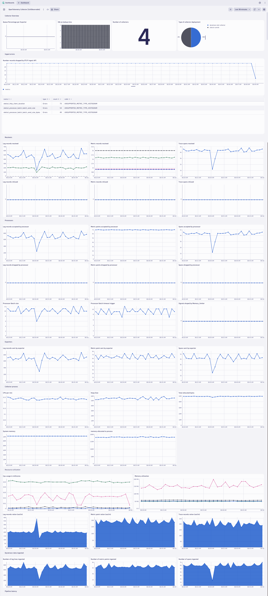

OpenTelemetry Capstone#
In this module we'll utilize multiple OpenTelemetry Collectors to collect application traces/spans, log records, and metric data points generated by OpenTelemetry, from a Kubernetes cluster and ship them to Dynatrace. This is a capstone lab that utilizes the concepts of the previous Kubernetes OpenTelemetry labs.
Lab tasks:
- Deploy 4 OpenTelemetry Collectors
- Configure OpenTelemetry Collector service pipeline for data enrichment
- Analyze metrics, traces, and logs in Dynatrace
Prerequisites#
Import Dashboards into Dynatrace
 Download astronomy-shop Dashboard
Download astronomy-shop Dashboard
 Download Collector Health Dashboard
Define workshop user variables
In your Github Codespaces Terminal:
export DT_ENDPOINT=https://{your-environment-id}.live.dynatrace.com/api/v2/otlp
export DT_API_TOKEN={your-api-token}
export NAME=<INITIALS>-k8s-otel-o11y
Move into the lab module directory
Command:
cd $base_dir/lab-modules/opentelemetry-capstone
Clean Up Previous Deployments
Delete dynatrace namespace and all previous Collector deployments
Command:
kubectl delete ns dynatrace
Create dynatrace namespace
Command:
kubectl create namespace dynatrace
Sample output:
namespace/dynatrace created
Create dynatrace-otelcol-dt-api-credentials secret
The secret holds the API endpoint and API token that OpenTelemetry data will be sent to.
Command:
kubectl create secret generic dynatrace-otelcol-dt-api-credentials --from-literal=DT_ENDPOINT=$DT_ENDPOINT --from-literal=DT_API_TOKEN=$DT_API_TOKEN -n dynatrace
Sample output:
secret/dynatrace-otelcol-dt-api-credentials created
Deploy cert-manager, pre-requisite for opentelemetry-operator
Command:
kubectl apply -f opentelemetry/cert-manager.yaml
Sample output:
namespace/cert-manager created\ customresourcedefinition.apiextensions.k8s.io/certificaterequests.cert-manager.io created\ customresourcedefinition.apiextensions.k8s.io/certificates.cert-manager.io created\ ...\ validatingwebhookconfiguration.admissionregistration.k8s.io/cert-manager-webhook created
Wait 30-60 seconds for cert-manager to finish initializing before continuing.
Validate that the Cert Manager components are running.
Command:
kubectl get pods -n cert-manager
Sample output:
| NAME | READY | STATUS | RESTARTS | AGE |
|---|---|---|---|---|
| cert-manager-5f7b5dbfbc-fkpzv | 1/1 | Running | 0 | 1m |
| cert-manager-cainjector-7d5b44bb96-kqz7f | 1/1 | Running | 0 | 1m |
| cert-manager-webhook-69459b8974-tsmbq | 1/1 | Running | 0 | 1m |
OpenTelemetry Operator and Role Based Access#
Deploy opentelemetry-operator
The OpenTelemetry Operator will deploy and manage the custom resource OpenTelemetryCollector deployed on the cluster.
Command:
kubectl apply -f opentelemetry/opentelemetry-operator.yaml
Sample output:
namespace/opentelemetry-operator-system created\ customresourcedefinition.apiextensions.k8s.io/instrumentations.opentelemetry.io created\ customresourcedefinition.apiextensions.k8s.io/opampbridges.opentelemetry.io created\ ...\ validatingwebhookconfiguration.admissionregistration.k8s.io/opentelemetry-operator-validating-webhook-configuration configured
Wait 30-60 seconds for opentelemetry-operator-controller-manager to finish initializing before continuing.
Validate that the OpenTelemetry Operator components are running.
Command:
kubectl get pods -n opentelemetry-operator-system
Sample output:
| NAME | READY | STATUS | RESTARTS | AGE |
|---|---|---|---|---|
| opentelemetry-operator-controller-manager-5d746dbd64-rf9st | 2/2 | Running | 0 | 1m |
Create clusterrole with read access to Kubernetes objects
---
apiVersion: rbac.authorization.k8s.io/v1
kind: ClusterRole
metadata:
name: otel-collector-k8s-clusterrole
rules:
- apiGroups: ['']
resources: ['events', 'namespaces', 'namespaces/status', 'nodes', 'nodes/spec', 'nodes/stats', 'nodes/proxy', 'pods', 'pods/status', 'replicationcontrollers', 'replicationcontrollers/status', 'resourcequotas', 'services']
verbs: ['get', 'list', 'watch']
- apiGroups: ['apps']
resources: ['daemonsets', 'deployments', 'replicasets', 'statefulsets']
verbs: ['get', 'list', 'watch']
- apiGroups: ['extensions']
resources: ['daemonsets', 'deployments', 'replicasets']
verbs: ['get', 'list', 'watch']
- apiGroups: ['batch']
resources: ['jobs', 'cronjobs']
verbs: ['get', 'list', 'watch']
- apiGroups: ['autoscaling']
resources: ['horizontalpodautoscalers']
verbs: ['get', 'list', 'watch']
Command:
kubectl apply -f opentelemetry/rbac/otel-collector-k8s-clusterrole.yaml
Sample output:
clusterrole.rbac.authorization.k8s.io/otel-collector-k8s-clusterrole created
Create clusterrolebinding for OpenTelemetry Collector service accounts
---
apiVersion: rbac.authorization.k8s.io/v1
kind: ClusterRoleBinding
metadata:
name: otel-collector-k8s-clusterrole-crb
subjects:
- kind: ServiceAccount
name: dynatrace-deployment-collector
namespace: dynatrace
- kind: ServiceAccount
name: dynatrace-daemonset-collector
namespace: dynatrace
- kind: ServiceAccount
name: contrib-deployment-collector
namespace: dynatrace
- kind: ServiceAccount
name: contrib-daemonset-collector
namespace: dynatrace
roleRef:
kind: ClusterRole
name: otel-collector-k8s-clusterrole
apiGroup: rbac.authorization.k8s.io
Command:
kubectl apply -f opentelemetry/rbac/otel-collector-k8s-clusterrole-crb.yaml
Sample output:
clusterrolebinding.rbac.authorization.k8s.io/otel-collector-k8s-clusterrole-crb created
Dynatrace Deployment Collector#
Receivers:
otlp, prometheus
| MODULE | DT DEPLOY | DT DAEMON | CON DEPLOY | CON DAEMON |
|---|---|---|---|---|
| otlp | - [x] | - [ ] | - [x] | - [ ] |
| prometheus | - [x] | - [x] | - [x] | - [x] |
| filelog | - [ ] | - [x] | - [ ] | - [ ] |
| kubeletstats | - [ ] | - [ ] | - [ ] | - [x] |
| k8s_cluster | - [ ] | - [ ] | - [x] | - [ ] |
| k8sobjects | - [ ] | - [ ] | - [x] | - [ ] |
Deploy OpenTelemetry Collector CRD
---
apiVersion: opentelemetry.io/v1beta1
kind: OpenTelemetryCollector
metadata:
name: dynatrace-deployment
namespace: dynatrace
spec:
envFrom:
- secretRef:
name: dynatrace-otelcol-dt-api-credentials
mode: "deployment"
image: "ghcr.io/dynatrace/dynatrace-otel-collector/dynatrace-otel-collector:latest"
Command:
kubectl apply -f opentelemetry/collector/dynatrace/otel-collector-dynatrace-deployment-crd.yaml
Sample output:
opentelemetrycollector.opentelemetry.io/dynatrace-deployment created
Validate running pod(s)
Command:
kubectl get pods -n dynatrace
Sample output:
| NAME | READY | STATUS | RESTARTS | AGE |
|---|---|---|---|---|
| dynatrace-deployment-collector-796546fbd6-kqflf | 1/1 | Running | 0 | 1m |
Dynatrace Daemonset Collector#
Receivers:
filelog, prometheus
| MODULE | DT DEPLOY | DT DAEMON | CON DEPLOY | CON DAEMON |
|---|---|---|---|---|
| otlp | - [x] | - [ ] | - [x] | - [ ] |
| prometheus | - [x] | - [x] | - [x] | - [x] |
| filelog | - [ ] | - [x] | - [ ] | - [ ] |
| kubeletstats | - [ ] | - [ ] | - [ ] | - [x] |
| k8s_cluster | - [ ] | - [ ] | - [x] | - [ ] |
| k8sobjects | - [ ] | - [ ] | - [x] | - [ ] |
Deploy OpenTelemetry Collector CRD
---
apiVersion: opentelemetry.io/v1beta1
kind: OpenTelemetryCollector
metadata:
name: dynatrace-daemonset
namespace: dynatrace
spec:
envFrom:
- secretRef:
name: dynatrace-otelcol-dt-api-credentials
mode: "daemonset"
image: "ghcr.io/dynatrace/dynatrace-otel-collector/dynatrace-otel-collector:latest"
Command:
kubectl apply -f opentelemetry/collector/dynatrace/otel-collector-dynatrace-daemonset-crd.yaml
Sample output:
opentelemetrycollector.opentelemetry.io/dynatrace-daemonset created
Validate running pod(s)
Command:
kubectl get pods -n dynatrace
Sample output:
| NAME | READY | STATUS | RESTARTS | AGE |
|---|---|---|---|---|
| dynatrace-daemonset-collector-h69pz | 1/1 | Running | 0 | 1m |
Contrib Deployment Collector#
Receivers:
otlp, prometheus, k8s_cluster, k8sobjects
| MODULE | DT DEPLOY | DT DAEMON | CON DEPLOY | CON DAEMON |
|---|---|---|---|---|
| otlp | - [x] | - [ ] | - [x] | - [ ] |
| prometheus | - [x] | - [x] | - [x] | - [x] |
| filelog | - [ ] | - [x] | - [ ] | - [ ] |
| kubeletstats | - [ ] | - [ ] | - [ ] | - [x] |
| k8s_cluster | - [ ] | - [ ] | - [x] | - [ ] |
| k8sobjects | - [ ] | - [ ] | - [x] | - [ ] |
Deploy OpenTelemetry Collector CRD
---
apiVersion: opentelemetry.io/v1beta1
kind: OpenTelemetryCollector
metadata:
name: contrib-deployment
namespace: dynatrace
spec:
envFrom:
- secretRef:
name: dynatrace-otelcol-dt-api-credentials
mode: "deployment"
image: "otel/opentelemetry-collector-contrib:0.103.0"
Command:
kubectl apply -f opentelemetry/collector/contrib/otel-collector-contrib-deployment-crd.yaml
Sample output:
opentelemetrycollector.opentelemetry.io/contrib-deployment created
Validate running pod(s)
Command:
kubectl get pods -n dynatrace
Sample output:
| NAME | READY | STATUS | RESTARTS | AGE |
|---|---|---|---|---|
| contrib-deployment-collector-74dfc4d9f4-s97k6 | 1/1 | Running | 0 | 1m |
Contrib Daemonset Collector#
Receivers:
prometheus, kubeletstats
| MODULE | DT DEPLOY | DT DAEMON | CON DEPLOY | CON DAEMON |
|---|---|---|---|---|
| otlp | - [x] | - [ ] | - [x] | - [ ] |
| prometheus | - [x] | - [x] | - [x] | - [x] |
| filelog | - [ ] | - [x] | - [ ] | - [ ] |
| kubeletstats | - [ ] | - [ ] | - [ ] | - [x] |
| k8s_cluster | - [ ] | - [ ] | - [x] | - [ ] |
| k8sobjects | - [ ] | - [ ] | - [x] | - [ ] |
Deploy OpenTelemetry Collector CRD
---
apiVersion: opentelemetry.io/v1beta1
kind: OpenTelemetryCollector
metadata:
name: contrib-daemonset
namespace: dynatrace
spec:
envFrom:
- secretRef:
name: dynatrace-otelcol-dt-api-credentials
mode: "daemonset"
image: "otel/opentelemetry-collector-contrib:0.103.0"
Command:
kubectl apply -f opentelemetry/collector/contrib/otel-collector-contrib-daemonset-crd.yaml
Sample output:
opentelemetrycollector.opentelemetry.io/contrib-daemonset created
Validate running pod(s)
Command:
kubectl get pods -n dynatrace
Sample output:
| NAME | READY | STATUS | RESTARTS | AGE |
|---|---|---|---|---|
| contrib-daemonset-collector-d92tw | 1/1 | Running | 0 | 1m |
Configure Astronomy Shop OTLP Export#
The astronomy-shop application includes an embedded OpenTelemetry Collector. It needs to be configured to export signals via OTLP to the Dynatrace Deployment Collector.
Our Helm chart values manifest contains the following configuration:
config:
receivers:
otlp:
protocols:
http:
# Since this collector needs to receive data from the web, enable cors for all origins
# `allowed_origins` can be refined for your deployment domain
cors:
allowed_origins:
- "http://*"
- "https://*"
httpcheck/frontendproxy:
targets:
- endpoint: 'http://{{ include "otel-demo.name" . }}-frontendproxy:8080'
exporters:
# Dynatrace OTel Collector
otlphttp/dynatrace:
endpoint: http://dynatrace-deployment-collector.dynatrace.svc.cluster.local:4318
processors:
resource:
attributes:
- key: service.instance.id
from_attribute: k8s.pod.uid
action: insert
connectors:
spanmetrics: {}
service:
pipelines:
traces:
receivers: [otlp]
processors: [memory_limiter, resource, batch]
exporters: [spanmetrics, otlphttp/dynatrace]
metrics:
receivers: [httpcheck/frontendproxy, otlp, spanmetrics]
processors: [memory_limiter, resource, batch]
exporters: [otlphttp/dynatrace]
logs:
processors: [memory_limiter, resource, batch]
exporters: [otlphttp/dynatrace]
Customize astronomy-shop helm values:
default:
# List of environment variables applied to all components
env:
- name: OTEL_SERVICE_NAME
valueFrom:
fieldRef:
apiVersion: v1
fieldPath: "metadata.labels['app.kubernetes.io/component']"
- name: OTEL_COLLECTOR_NAME
value: '{{ include "otel-demo.name" . }}-otelcol'
- name: OTEL_EXPORTER_OTLP_METRICS_TEMPORALITY_PREFERENCE
value: cumulative
- name: OTEL_RESOURCE_ATTRIBUTES
value: 'service.name=$(OTEL_SERVICE_NAME),service.namespace=NAME_TO_REPLACE,service.version={{ .Chart.AppVersion }}'
Pattern to replace:
service.namespace=NAME_TO_REPLACE
Command:
sed -i "s,NAME_TO_REPLACE,$NAME," astronomy-shop/collector-values.yaml
Update astronomy-shop OpenTelemetry Collector export endpoint via helm
Command:
helm upgrade astronomy-shop open-telemetry/opentelemetry-demo --values astronomy-shop/collector-values.yaml --namespace astronomy-shop --version "0.31.0"
Sample output:
NAME: astronomy-shop LAST DEPLOYED: Thu Jun 27 20:58:38 2024 NAMESPACE: astronomy-shop STATUS: deployed REVISION: 2
Validate and Analyze Data in Dynatrace#
Validate the OpenTelemetry data using the Astronomy Shop Dashboard.
Download astronomy-shop Dashboard
Wrap Up#
What You Learned Today
By completing this module, you've successfully deployed the OpenTelemetry Collector to collect metrics, traces, and logs from Kubernetes and ship them to Dynatrace for analysis.
- The Dynatrace Distro of OpenTelemetry Collector includes supported modules needed to ship telemetry to Dynatrace
- The
otlpreceiver receives metrics, traces, and logs from OpenTelemetry exporters via gRPC/HTTP - The
filelogreceiver scrapes logs from the Node filesystem and parses the contents - The
prometheusreceiver scrapes metric data exposed by Pod Prometheus endpoints
- The
- The Contrib Distro of OpenTelemetry Collector includes additional modules needed to ship telemetry to Dynatrace
- The
kubeletstatsreceiver scrapes metrics from the local kubelet on the Node - The
k8s_clusterreceiver queries the Kubernetes cluster API to retrieve metrics - The
k8sobjectsreceiver watches for Kubernetes events (and other resources) on the cluster
- The
- Dynatrace allows you to perform powerful queries and analysis of the telemetry data